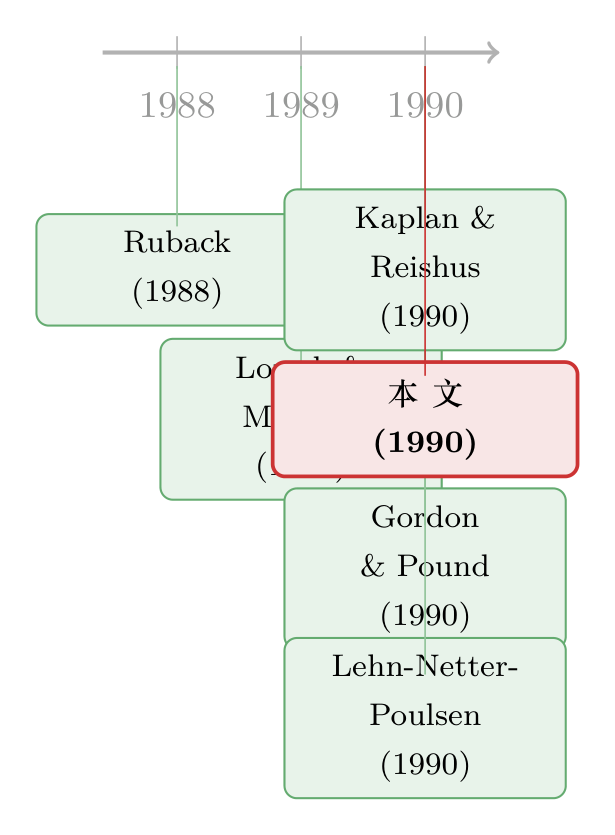

三篇顶刊论文，一位律师，和一句『信息量其实很小』
本文读的是 Herzel (1990, Journal of Financial Economics)：一位执业律师受邀点评三篇关于公司治理的统计研究（Gordon-Pound 的 ESOP、Lehn-Netter-Poulsen 的双层股权重组、Kaplan-Reishus 的外部董事），结论是——尽管这些研究设计精巧、统计娴熟，它们带来的真正新信息却「相当有限」。他借此质疑：单靠统计、把制度细节抛在一边，到底能不能读懂公司治理？
1 一个律师，闯进了计量经济学家的房间
想象这样一个场景。1990 年，《金融经济学杂志》请来三组学者，各自交出一篇关于公司治理的实证论文：用事件研究 (event study) 量 ESOP 的反收购效应，用配对比较 (matched comparison) 拆解双层股权重组与杠杆收购的差别，用横截面回归 (cross-sectional regression) 检验外部董事的质量。三篇都是那个年代的「标准动作」——精巧的假设、干净的子样本、显著的 t 值。
然后，编辑把这三篇论文递给了一个人：Leo Herzel。他不是计量经济学家，而是芝加哥 Mayer, Brown & Platt 律所的执业律师，常年替上市公司打收购与反收购的官司。让一个天天泡在特拉华州判例里的人，去点评三篇满是回归系数的论文，本身就是一种耐人寻味的安排。
Herzel 给出的判词，开门见山，近乎冒犯：
尽管有大量看似精密的假设构造和娴熟的统计分析，这些论文里真正令人兴奋的新信息，其实相当有限（the exciting new information in these papers is quite modest）。
这句话，是理解整篇评论的钥匙。它不是在挑某个回归的毛病，而是在追问一件更根本的事：当你只用「统计的眼睛」去看公司治理，你究竟看见了什么，又漏掉了什么？
接下来，我们就跟着这位律师的目光，一篇一篇看过去。你会发现，他每一次的「不满意」，都指向同一个方向。
2 第一案：ESOP 真的「毁掉了」收购市场吗？
第一篇是 Gordon 和 Pound 的《ESOPs and Corporate Control》（关于这篇论文本身，可参见《「为员工好」还是「为自己好」？——一个 ESOP 的两副面孔》）。他们的做法是经典的事件研究：用 杠杆型员工持股计划 (leveraged ESOP) 公告时的股价反应，当作一台「测量仪」，去探测市场怎么看 ESOP 的反收购属性。两个关键事件被钉在时间轴上——1985 年 2 月生效的特拉华州反收购法，以及一年后 Shamrock Holdings v. Polaroid 一案中特拉华衡平法院的判决（认定在特定情形下，用杠杆 ESOP 当收购防御是合法的）。
他们的核心结论是：杠杆 ESOP 正被当作反收购工具。结果呢？
「这应该不会让任何人吃惊，」Herzel 写道，「这本来就是投资银行向潜在客户兜售杠杆 ESOP 时的说辞。」
这是他的第一记重拳——统计「证实」的，往往是业内人尽皆知的常识。但更要紧的，是那些子样本里的细节数字。Gordon-Pound 发现：
- ESOP 公告的平均效应约等于零；
- 但若公告发生在收购要约存在时，股价在 Polaroid 判决前下跌
3.3%、判决后下跌4.5%； - 判决后，那些把否决收购的权力交给 ESOP（联合内部人）的方案，压低股价
4.6%； - 判决后，特拉华公司不带否决权的 ESOP 公告，股价反而上涨
2.2%；非特拉华公司则无显著变化； - 用无投票权股票做的 ESOP，对股价无显著影响。
数字很漂亮。可 Herzel 的问题是：这些系数，到底在说什么？ 他给出的解读，几乎全部来自制度细节，而非统计本身。
先看那个 -4.6% 的「否决权 ESOP」。作者把它当作「ESOP 转移了否决权、损害股东」的证据。Herzel 却认为这是 自选择 (self-selection)：
这些 ESOP，往往是被那些正受到杠杆收购方威胁的公司创设的——这些买家必须依赖目标公司的资产和现金流来融资。换句话说，市场是在给定收购威胁性质的前提下，评估这套防御的有效性。
再看那个反直觉的 +2.2%——特拉华公司不带否决权的 ESOP 居然让股价上涨。作者觉得「奇怪」(curiously)。Herzel 的解释依旧是制度性的：特拉华法律和法院对收购最不设限，因此「一家特拉华公司认为自己是潜在收购目标」这条信息，哪怕是从一则防御公告里读出来的，市场也当成利好。而非特拉华公司的同类公告，则被「防御可能真的会成功」这件坏事所主导，于是没有可辨识的净效应。
注意 Herzel 的论证结构：同一个公告，在特拉华是利好、在别处是利空，符号相反。一个纯粹的统计框架很难「事先」预言这种反转；但只要你懂特拉华法相对宽松这件制度事实，符号就几乎是注定的。这正是他想说的：解释力来自制度，不来自回归。
而真正精彩的，是 Herzel 用一整套法律推理，去拆穿「否决权」这个概念本身。Gordon-Pound 把否决权定义为「阻止一桩收购所需票数（或要约应答数）的 95%」——在特拉华，这个数字是 14%（即 15% 的 95%）。可 Herzel 指出，在特拉华，这 14% 根本不是真正的否决权：
特拉华反收购法（第 203 条）有两个纽约法所没有的例外：其一，若收购方（原本不是 15% 股东）一举拿下 85% 以上股份，法条不适用；其二，收购方可凭借「非利益相关股东」三分之二的同意随时绕开它。于是 Herzel 抛出那个关键问句：
一旦收购方拿下目标公司 50% 以上的投票股，员工凭什么要跟自己的新老板对着干？
他的逻辑链条是：在取得投票控制权之前，ESOP 确实能拖住一个依赖目标资产融资的买家——因为放贷人要确保收购方能 100% 控制资产才肯放款；但一旦控制权易手，董事在法律和现实压力下纷纷辞职，员工更是「指望留下来」，没有理由为了一笔会打进自己账户的溢价去得罪新东家。结论是——
杠杆 ESOP 在特拉华反收购法下的主要负担，落在了杠杆收购发起人和其他融资极紧的买家身上。手握现金的买家反而获得了竞争优势。
也就是说，这部「反收购法」其实是一部高度歧视性的法律：它偏袒那些不靠目标现金流就能融资的有钱买家，顺带抬高了「目标规模」作为防御手段的重要性。Polaroid 案本身就是佐证——击败收购的关键并非 ESOP，而是一次资本重组（recapitalization）：以每股 $50 的部分自我要约，外加把一块有投票权的优先股卖给 Lazard Frères 组织的「友好买家」合伙企业。Shamrock 最终每股 $45 的全购要约，附带「90% 股份须应答」的条件，而 ESOP 持有的 14% 恰好让这个条件几乎不可能达成。
你看，Herzel 花了整整一节，几乎没有动一个统计量，却把作者赋予 ESOP 的「否决权」故事，改写成了一个关于「谁能不靠目标资产融资」的故事。这就是他所谓「新信息很有限」的真意：统计告诉了我们「发生了什么」（股价跌了 4.6%），却没告诉我们「为什么」——而「为什么」恰恰藏在那些回归方程装不下的制度褶皱里。
3 第二案：拿来对比的，是不是「对的」那一个？
第二篇是 Lehn、Netter 和 Poulsen 的《双层股权重组与杠杆收购之间的选择》。它的雄心更大：通过对比 双层股权重组 (dual-class recapitalization) 与 杠杆收购 (leveraged buyout, LBO) 的差异，去理解控制权变更背后的动机。
作者的假设链是这样的：企业会为自己挑选最合适的交易形式，因此双层股权重组的公司，应当比 LBO 公司有更好的成长机会、更低的代理成本、更低的税负。理由是：双层重组后公司仍是上市公司，保留了进入公开股权市场融资的通道（利于成长）；而 LBO 公司支付的高溢价，本身就是管理或激励出了问题的证据（代理成本更高）；又因为 LBO 公司有巨额利息税盾，能用上这些抵扣的公司才会选 LBO。
实证结果支持了这套故事的大部分：在交易前的一、二、五年里，成长性与税负假设得到强支持，代理成本假设支持较弱；交易后，双层重组公司把更高比例的现金流投入资本开支，且更多地在重组后继续发行证券——都指向「它们有更好的投资机会」。值得一提的是，样本里的双层重组平均没有溢价，而且——
与 LBO 形成鲜明对比的是，双层股权重组几乎不与收购相关联——
97起里只有3起；而40%的 LBO 之前都有真实的收购要约或传闻。
到这里，一切看起来都很顺。但 Herzel 的第二记重拳，打在了「对照组」上：
与普通资本重组（ordinary recapitalization）的比较，本可以大大增加这篇论文的有用性。
他的论点是：双层股权重组在战略上其实是个相当「特殊」的物种——它要求事前股份已高度集中在某个家族或管理层手中，且需要股东投票批准（因为要改公司章程）。这两条硬约束，意味着双层重组与 LBO 在现实里只在极有限的程度上互为替代品。一个统计比较当然会在两者间找到「重要差异」——可那几乎是定义决定的。真正能照见动机的对照物，不是 LBO，而是普通资本重组：后者不需要股份高度集中、通常也不需要股东批准，因此在战略上远比双层重组更接近 LBO 和其他收购竞价。
这是一个极其锋利、却又极易被忽视的方法论批评：你选错了对照组，于是你测到的「差异」，一半来自交易本身的可行性约束，而非来自公司基本面的真实分野。 作者把这差异解读成「双层重组公司投资机会更好」，可 Herzel 提醒：当一类交易天然只发生在「已有控制集团、且能拿到股东票」的成功公司身上时，强烈的选择效应早就把样本筛得面目全非了。
他甚至顺手给作者留了一道延伸题：普通资本重组里管理层为何往往偏好它而非 LBO？因为 LBO 通常会引入一个来自外部、手握控制性股权的新老板——「上市公司的管理层，通常不想要一个新老板」。这一句，又是制度直觉，而非统计。
4 第三案与那条贯穿始终的暗线
第三篇是 Kaplan 和 Reishus 的《外部董事职位与公司业绩》（参见《好经理的名声，是用别人家的董事会席位记账的》）。论文正文在此被截断，但 Herzel 在引言里已交代了它在三篇中的位置：前两篇从收购市场的角度切入治理，而 Kaplan-Reishus 更直接——它研究的是「挑选外部董事的标准」这一治理的核心环节。
Herzel 把三篇串起来的方式，本身就是一种叙事：
显然，如果 Gordon-Pound 是对的，ESOP（连同其他近期发展）正在摧毁收购市场，那么「如何挑选外部董事」在 1990 年代会比 1980 年代更重要。能把约束管理层的首要责任，交还给那个法律上本就该负责的机构——董事会——将是一个理想的解。
换句话说：收购这只「外部的手」如果被反收购法和 ESOP 拴住了，那么董事会这只「内部的手」就必须更硬。三篇论文，恰好排成了一条从「外部控制」退向「内部控制」的逻辑线。
但真正把它们绑在一起的，是 Herzel 那条没有明说、却贯穿全文的暗线——统计实证研究的边界。他在引言里写得很清楚：除了「公司治理」这个明面上的主题，还有一个隐含的主题，就是「统计实证研究的局限」。三篇论文都做得很好，可它们一次次撞上同一堵墙：统计能告诉你相关、能告诉你显著，却很难替你回答「这背后的制度机制是什么、对照组该选谁、这个系数的符号为什么会反转」。
于是反转出现了：这篇「评论」表面上在逐一点评三篇论文，实际上是在为一个更大的命题辩护——公司治理研究，不能只长一只「统计的眼睛」。 那些最有解释力的洞见，往往来自一个懂特拉华判例、懂 ERISA 受托规则、懂收购融资结构的人，而不是来自一个更显著的 t 值。
5 文献脉络
这篇评论之所以耐读，是因为它站在 1980 年代末公司治理实证研究井喷的节点上回望。要理解它的位置，得先看它身后这条线。
最早，关于双层股权与投票权的争论，有 Ruback (1988) 对「强制性双层换股要约」的分析——它把「投票权可以被结构化地剥夺」这件事，正式带进了金融经济学的视野。接着，治理研究的另一支从董事会的现实运作切入，Lorsch 和 MacIver (1989) 的《Pawns or Potentates》以近乎人类学的笔法，描摹了美国公司董事会究竟是「棋子」还是「权贵」。

然后，到了 1990 年的这一期 JFE，三篇论文几乎同时落地：Gordon-Pound 用事件研究量 ESOP 的反收购效应，Lehn-Netter-Poulsen 用配对比较拆解双层重组与 LBO，Kaplan-Reishus 用横截面回归检验外部董事。而 Herzel——他与 Shepro 同年出版的《Bidders and Targets》正是这套制度知识的集大成之作，并在《金融时报》上记下了「SEC 输掉一股一票案」这桩当时的大事——被请来做这场「统计盛宴」的旁观者。他所处的位置很特别：既不在数据这一侧，也不在纯理论那一侧，而是站在制度与判例这第三侧，提醒前两侧别把彼此当成了世界的全部。
6 评论与延伸（Q&A + 研究方向）
(a) 几个可能的疑问
Q：这是一篇没有数据、没有模型的「评论」，它凭什么发在 JFE 上、又凭什么值得读？
因为它示范了一种稀缺的能力：用制度知识去「证伪」统计解释。它不否认那些回归是对的，而是反复指出——同一组系数，换一套制度故事就能讲出相反的因果。对今天习惯了「显著即结论」的实证研究者来说，这种训练比一个新系数更值钱。
Q：Herzel 说「平均效应为零、但子样本差异巨大」，这难道不正是事件研究的常态吗？他是不是苛责了？
他批评的不是「做子样本」本身，而是作者对子样本结果的因果解读。比如
-4.6%被解读为「ESOP 转移否决权损害股东」，Herzel 则用自选择给出了观察等价 (observationally equivalent) 的替代解释：是受威胁的公司才去设这种 ESOP，市场跌的是「威胁」而非「ESOP」。这是识别问题，不是描述问题，批评切中要害。
Q：「对照组选错了」这个批评，对 Lehn-Netter-Poulsen 到底有多致命？
相当致命但不致死。作者想用「双层重组 vs. LBO」的差异去推断公司基本面分野，可双层重组天然只发生在「已有控制集团、能拿到股东票」的公司身上，强选择效应让两组从一开始就不可比。Herzel 的修正——加入普通资本重组作为对照——确实能把「可行性约束」和「基本面差异」分开。这不推翻结论，但提醒它的因果解读被高估了。
Q：那 14% 的「否决权」既然在特拉华形同虚设，Gordon-Pound 是不是错了？
不能说错，而是「否决权」这个构造变量在不同州法下含义不同。在纽约/新泽西的强制并购法下它更接近真否决，在特拉华则因两个例外而大打折扣。Herzel 的意思是：把一个法律含义随州法漂移的变量当成统一的解释变量，本身就会污染识别。
Q：一个律师的「制度直觉」，会不会只是另一种没有检验的故事？凭什么比回归更可信？
这是对 Herzel 最有力的反驳。他的解释很多确实是 narrative、未经检验的。但他的贡献不在于「我的故事更对」，而在于「存在一个同样自洽、却把因果指向别处的故事」——这足以把作者的解释从「结论」降级为「假说」。理想的做法当然是把他的制度假说也做成可检验的设定，而这正是后续研究该接的棒。
Q：放到今天看，他「质疑纯统计方法」的立场过时了吗？
恰恰相反。在因果推断 (causal inference) 成为实证主流的今天，他的关切被「自然实验、识别策略、机制检验」这套语言系统化地继承了下来。他当年用判例和 ERISA 规则做的事，今天我们用断点、DiD 和制度冲击来做——内核是一样的：没有制度，就没有识别。
(b) 几个可能的研究问题与提案
1. 把 Herzel 的「自选择」假说做成可检验的设定。
【经济故事】否决权 ESOP 的 -4.6%，究竟是「转移否决权损害股东」，还是「受 LBO 威胁的公司才去设它，市场跌的是威胁」？这是一个干净的识别之争。
【可行性】中。需要手工识别每家设 ESOP 公司在公告前是否已面临（依赖目标现金流融资的）收购威胁，再做交互项。1980 年代末样本小、信息散，数据构建成本高，但 doable；难点在「融资是否依赖目标资产」这一变量的代理。
2. 用现代信用市场数据，重做 Herzel 的「融资结构决定防御有效性」命题。 【经济故事】Herzel 的核心论断是：反收购防御主要拖住「依赖目标资产现金流融资」的买家，而对手握现金/能外部融资的买家几乎无效。这是一个关于收购方融资约束的假说。 【可行性】中高。可借助杠杆贷款、并购融资条款数据，按收购方融资是否依赖目标资产分组，检验反收购条款对成交概率与溢价的差异效应。识别上可利用州反收购法的交错生效作为冲击。
3. 「对照组选择」对治理实证结论的敏感性审计。 【经济故事】Herzel 指出选错对照组会污染因果。一个自然的元研究问题是：在公司金融的配对比较文献里，把对照组从「极端可比组」换成「真正最近邻组」，有多少经典结论会反转或衰减？ 【可行性】高。纯方法论复现，数据多为公开样本，识别清晰，适合做一篇方法警示型论文。
4. 制度知识对实证解释的「增量」能否被量化？ 【经济故事】Herzel 隐含主张：制度细节带来的解释力，是回归之外的增量。能否在一个治理事件研究里，量化「加入州法/契约细节变量后」对异常收益横截面解释力（R²、符号稳定性）的提升？ 【可行性】中。需要把判例与法条编码成结构化变量，工程量大，但一旦建成，对整条治理文献都有外溢价值。
7 我的判断
先说贡献。这篇文章的价值，完全不在数据，而在一种思维的示范。Herzel 用三个案例，反复演示了同一件事：一个统计上显著、被作者赋予明确因果含义的系数，在一个懂制度的人手里，可以被改写成一个因果指向完全不同、却同样自洽的故事。他没有推翻任何一篇论文的数字，但他成功地把它们的解释从「结论」降格为「假说」。对一个 1990 年的实证研究共同体来说，这是一剂必要的清醒剂；对今天的我们，它读起来像是因果推断革命的一份「史前预告」。
再说担忧。最大的问题是对称的：Herzel 批评作者的解释「未经检验」，可他自己的制度叙事同样未经检验。自选择也好、融资结构也罢，都是漂亮的故事，但他没有给出任何能把自己的假说与作者的假说区分开的经验设计。于是这篇评论停在了「存在替代解释」这一步，而没有推进到「哪个解释更对」。它赢得了怀疑论的胜利，却没能给出建设性的识别。
我最想看到的后续，是有人把他那些律师式的直觉，真正翻译成可检验的命题——尤其是那条「反收购防御只拖得住靠目标资产融资的买家」的论断。这是一个关于收购方融资约束的清晰假说，放在今天有杠杆贷款数据、有州反收购法交错生效的自然实验，完全有机会做成一篇干净的因果论文。某种意义上，Herzel 在 1990 年提出的问题，要等到识别工具成熟的二三十年后，才真正等到能回答它的人。
参考文献
Herzel, Leo, 1990. Corporate governance through statistical eyes. Journal of Financial Economics 27(2), 581–593.
Herzel, Leo and Richard W. Shepro, 1990. Bidders and Targets, Ch. 6. Basil Blackwell, Oxford and Cambridge, MA.
Herzel, Leo and Richard W. Shepro, 1990. SEC loses one-share-one-vote case. Financial Times, June 28.
Lorsch, Jay and Elizabeth MacIver, 1989. Pawns or Potentates: The Reality of America's Corporate Boards. Harvard Business School Press, Boston, MA.
Ruback, Richard S., 1988. Coercive dual-class exchange offers. Journal of Financial Economics 20, 133–172.